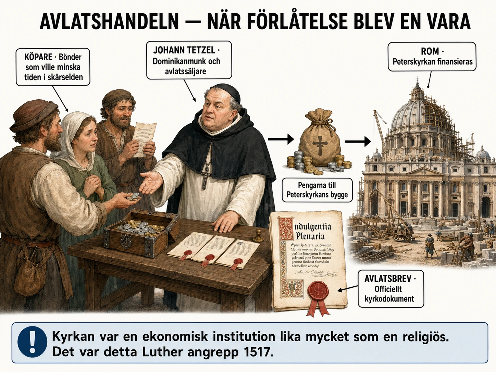
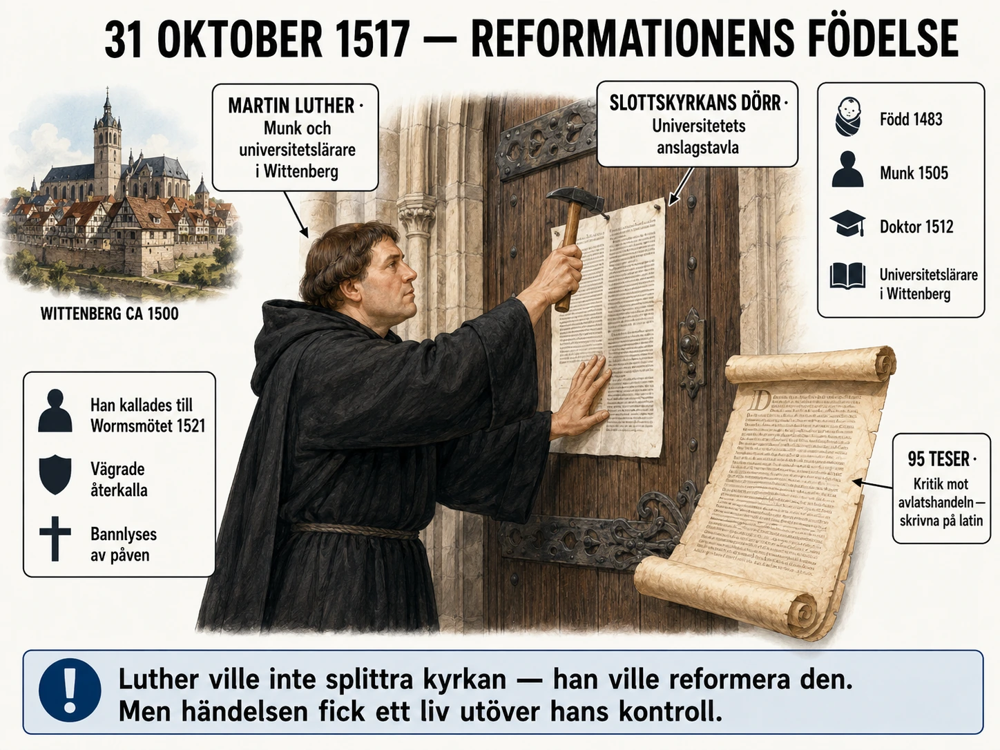
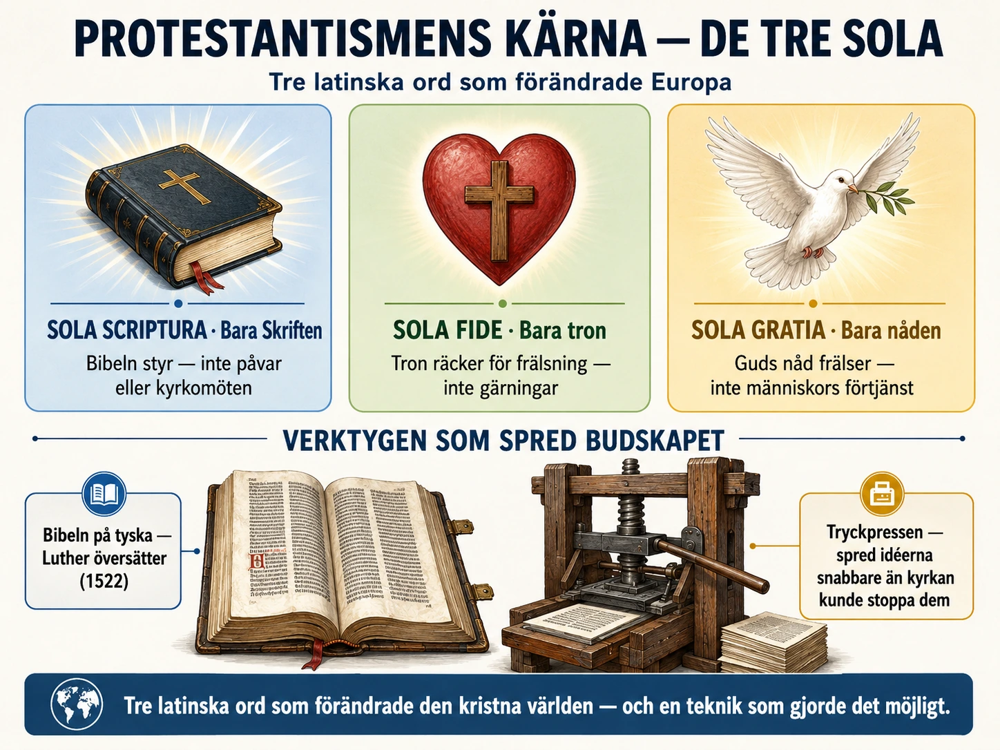
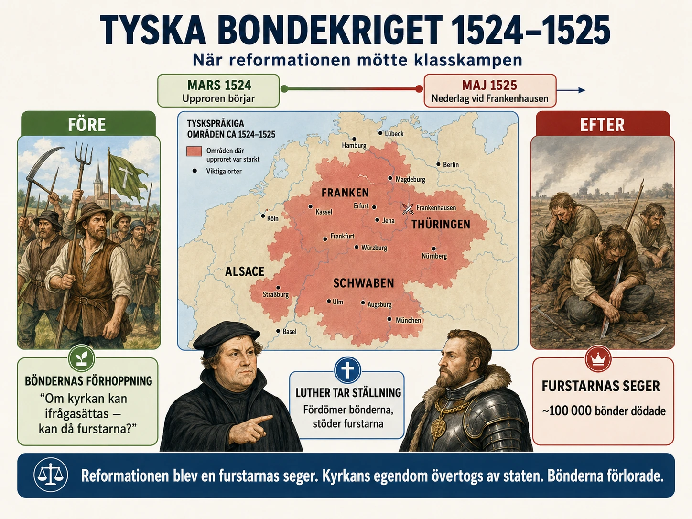
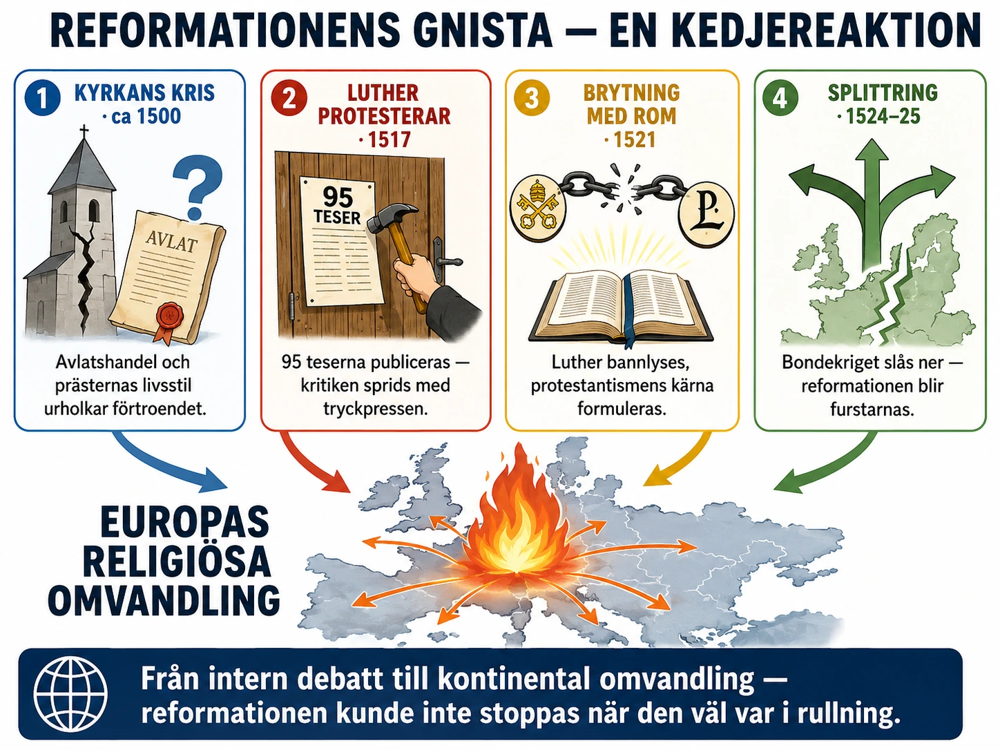

— hur en munks kritik splittrade kyrkan —
Titta på bilden innan du läser vidare:

I början av 1500-talet var den katolska kyrkan fortfarande den mäktigaste institutionen i Västeuropa. Den fanns i nästan varje människas liv från födelse till död. Kyrkan döpte barn, höll gudstjänster, vigde par och begravde de döda. För många människor var kyrkan också vägen till frälsning — alltså hoppet om att komma till himlen efter döden.
Men kyrkan hade samtidigt hamnat i en djup kris.
Under senmedeltiden hade många börjat tappa förtroendet för kyrkans ledning. Påvarna hade ibland uppträtt mer som politiska furstar än som andliga ledare. Under en period hade det till och med funnits två eller tre påvar samtidigt — den västliga schismen (se Senmedeltiden avsnitt 11).
För vanliga människor kunde det se ut som att kyrkan, som skulle stå för sanning och helighet, själv var full av maktkamp och girighet.
En viktig orsak till missnöjet var kyrkans stora rikedom. Kyrkan ägde jord, tog emot skatter och hade stora inkomster. Många kyrkor och kloster var rika, och höga kyrkliga ledare kunde leva mycket bekvämt.
Samtidigt fanns det präster som inte levde som de lärde. Präster skulle egentligen leva fromt och enkelt. Men det fanns exempel på präster som drack för mycket, bröt mot celibatet (löftet att inte leva sexuellt) eller verkade mest intresserade av pengar.
Det blev en farlig motsägelse: kyrkan predikade ödmjukhet, men många såg kyrkans ledare leva rikt.
Det som till slut blev den tändande gnistan var handeln med avlatsbrev.
För att förstå avlatsbreven måste man förstå hur kristna såg på synd och straff. En människa kunde bekänna sina synder och få förlåtelse av Gud genom kyrkan. Men man tänkte också att synden kunde lämna kvar ett straff. Detta straff kunde rena bort i skärselden efter döden — en plats där själen renades innan den kunde komma till himlen.
Människor var rädda för att själva eller deras döda släktingar skulle behöva lida länge där.
Ett avlatsbrev var ett dokument som lovade att minska detta straff. Från början kunde avlat kopplas till goda handlingar eller böner. Men under senmedeltiden började avlatsbreven allt oftare säljas för pengar.
En av de mest kända försäljarna var munken Johann Tetzel. Han reste runt i tyska områden och sålde avlat. Pengarna gick bland annat till bygget av Peterskyrkan i Rom.
Tetzel använde starka budskap. Han spelade på människors rädsla för skärselden och deras kärlek till döda släktingar. Hans budskap var ungefär: om du betalar, kan du hjälpa en själ att slippa lidande.
För fattiga människor kunde detta bli plågsamt. Många ville hjälpa sina döda föräldrar men hade knappt råd. Ändå kunde de känna sig pressade att köpa avlatsbrev.
Det började se ut som att kyrkan sålde Guds förlåtelse. Och det var detta som en munk i staden Wittenberg snart skulle reagera starkt mot.
I början av 1500-talet var den katolska kyrkan fortfarande den mäktigaste institutionen i Västeuropa. Den fanns i nästan varje människas liv från födelsen till döden. Kyrkan döpte barn, höll gudstjänster, vigde människor, tog emot bekännelser, förlät synder och begravde de döda. För många människor var kyrkan också vägen till frälsning, alltså hoppet om att komma till himlen efter döden.
Men kyrkan hade samtidigt hamnat i en djup kris.
Under senmedeltiden hade många börjat tappa förtroendet för kyrkans ledning. Det fanns flera orsaker till det. Påvarna hade ibland uppträtt mer som politiska furstar än som andliga ledare. Under en period hade det till och med funnits flera påvar samtidigt, vilket skapade förvirring och splittring. Detta kallades den västliga schismen (se Senmedeltiden avsnitt 11). För vanliga människor kunde det se ut som att kyrkan, som skulle stå för sanning och helighet, själv var fylld av maktkamp, pengar och girighet.
En viktig orsak till missnöjet var kyrkans stora rikedom. Kyrkan ägde jord, tog emot skatter och avgifter och hade stora inkomster från människors religiösa liv. Många kyrkor och kloster var rika, och höga kyrkliga ledare kunde leva mycket bekvämt.
Samtidigt fanns det präster och biskopar som inte levde som de lärde. Präster skulle egentligen leva fromt, enkelt och moraliskt. Men det fanns exempel på präster som drack för mycket, bröt mot celibatet — löftet att leva utan sexuella relationer — eller mest verkade intresserade av pengar och status. Alla präster var förstås inte sådana, men tillräckligt många exempel fanns för att människor skulle börja tvivla på kyrkans trovärdighet.
Det blev en farlig motsägelse: kyrkan predikade ödmjukhet, enkelhet och kärlek till Gud, men många såg samtidigt kyrkans ledare leva rikt och världsligt.
Det som till slut blev den stora tändande gnistan var handeln med avlatsbrev.
För att förstå avlatsbreven måste man först förstå hur många kristna på den tiden såg på synd och straff. En människa kunde bekänna sina synder och få förlåtelse av Gud genom kyrkan. Men man tänkte också att synden kunde lämna kvar ett straff som behövde renas bort, antingen genom botgöring (religiösa handlingar för att gottgöra synder) i livet eller genom en tid i skärselden efter döden.
Skärselden var enligt katolsk tro en plats eller ett tillstånd där själen renades innan den kunde komma till himlen. Människor var därför mycket rädda för att själva, eller deras döda släktingar, skulle behöva lida länge där.
Ett avlatsbrev var ett dokument som lovade att minska detta straff. Från början kunde avlat kopplas till goda handlingar, böner, pilgrimsresor eller andra religiösa handlingar. Men under senmedeltiden började avlatsbreven allt oftare säljas för pengar.
Det gjorde många upprörda. Det började se ut som att kyrkan sålde Guds förlåtelse.
En av de mest kända försäljarna av avlatsbrev var Johann Tetzel. Han var dominikanmunk och reste runt i tyska områden för att sälja avlat. Hans uppdrag hade koppling till kyrkans behov av pengar, bland annat för att finansiera bygget av Peterskyrkan i Rom.
Tetzel använde starka budskap för att övertyga människor. Han spelade på deras rädsla för skärselden och deras kärlek till döda familjemedlemmar. Budskapet var ungefär: om du betalar, kan du hjälpa en själ att slippa lidande i skärselden.
För fattiga människor kunde detta bli mycket plågsamt. Många ville hjälpa sina döda föräldrar eller släktingar, men hade knappt råd. Ändå kunde de känna sig pressade att köpa avlatsbrev.
I början av 1500-talet hade den katolska kyrkan stor makt — men också växande problem. Kyrkans rikedom och prästers livsstil hade skadat förtroendet. Handeln med avlatsbrev framstod för många som att kyrkan sålde Guds förlåtelse. Människor var rädda för skärselden och pressades att betala för sin egen och sina släktingars frälsning.
Det var just detta som en munk i staden Wittenberg snart skulle reagera starkt mot. Hans namn var Martin Luther.
En enkel orsakskedja: Kyrkan hade förlorat förtroende under senmedeltiden → kyrkans rikedom och prästers livsstil väckte missnöje → avlatsbreven såldes till människor som var rädda för skärselden → Johann Tetzel gjorde handeln extra tydlig och provocerande → tändmaterialet var lagt för en stor reformation.
För att förstå hur stor kyrkans roll var i Europa kring år 1500 behöver vi tänka oss bort från vår tid och in i deras. Vi som lever idag tänker ofta på religion som något privat — vad jag tror på, hur jag ber, om jag går till kyrkan. För människor i medeltidens slutskede var det inte så.
Religion var offentlig. Den var politisk. Den var strukturen som hela samhället byggde på. Att vara icke-kristen i Europa var i praktiken omöjligt. Kyrkan styrde tidens gång — vilka dagar som var arbetsfria, vilka som var fastedagar, när året började. Tio procent av all skörd gick till kyrkan som tionde. Alla viktiga livshändelser — dop, vigsel, begravning — var kyrkliga handlingar. Man kunde inte gifta sig "civilt" eller bli begraven utanför kyrkans mark.
Och så fanns frågan om frälsningen. För en troende kristen var hela jordelivet en passage. Det viktiga var vad som hände efter döden — om man kom till himlen, till helvetet, eller till skärselden. Och kyrkan var den enda institution som hade nyckel till himlen. Att förlora kyrkans gillande var att riskera sin eviga själ.
Misstrendet mot kyrkan kom inte plötsligt med Luther. Det hade byggts upp under generationer.
Redan under 1300-talet hade engelsmannen John Wycliffe (cirka 1320–1384) kritiserat kyrkans rikedom, ifrågasatt påvens auktoritet och översatt delar av Bibeln till engelska. Hans efterföljare kallades lollarder och förföljdes hårt. Wycliffe själv dog naturlig död, men 44 år efter hans död grävdes hans kvarlevor upp och brändes som kättarens.
I Böhmen (dagens Tjeckien) tog Jan Hus (cirka 1372–1415) upp många av Wycliffes idéer. Han kritiserade avlatshandeln och kyrkans makt. Han hade stort folkligt stöd, särskilt i Prag. När han kallades till konciliet i Konstanz för att försvara sina idéer fick han löfte om säker rätt att resa hem. Det löftet bröts. Hus brändes på bål som kättare år 1415.
Hus efterföljare gjorde uppror — de så kallade hussitiska krigen 1419–1434. De vann flera militära segrar mot katolska arméer. Till slut förhandlades en kompromiss fram. Men budskapet var tydligt: kritik mot kyrkan var möjlig — om man var villig att betala priset.
Detta är viktigt att ha i minnet när Luther dyker upp 1517. Han var inte den första som ifrågasatte. Han var den som lyckades.
För att förstå skalan på kyrkans rikedom hjälper det med några siffror.
Vid 1500-talets början ägde den katolska kyrkan uppskattningsvis en tredjedel av all odlingsbar mark i Tyskland. I vissa områden ännu mer. Klostren var stora godsägare. Biskopar styrde stora landområden som om de vore furstar. Kyrkliga skatter — som tiondet — togs in av varje gud.
I Rom satt påven i Vatikanen — vid den här tiden en pågående byggarbetsplats. Påven Julius II (1503–1513) hade börjat bygga om Peterskyrkan till den största kyrkan i världen. Hans efterträdare Leo X (1513–1521) fortsatte projektet. Det kostade enorma summor pengar. Var skulle de komma ifrån?
En del kom från intensifierad avlatshandel.
Avlatsläran var inte påhittad på dagen. Den hade utvecklats under flera hundra år och byggde på sofistikerad teologi. Tanken var följande:
När en kristen begått en synd måste hen göra två saker: bekänna synden för att få förlåtelse, och göra botgöring för att lindra det straff som synden förtjänat. Förlåtelsen kunde ges av en präst (det kallades absolution). Men botgöringen — straffet — var en annan sak.
Botgöring kunde innebära böner, fastor, pilgrimsresor eller goda gärningar. Om man inte hann fullgöra all sin botgöring i livet, fortsatte den i skärselden efter döden.
Avlat var en lindring av detta straff. Kyrkan menade att Kristus och helgonen hade samlat en skatt av förtjänster som var mycket större än vad någon hade behövt. Påven kunde dela ut av denna skatt — i form av avlat — till levande eller döda.
Från början var avlat kopplad till verkliga handlingar — att vallfärda till Rom, att slåss i ett korståg, att bygga en kyrka. Men gradvis kom det också att gå att köpa avlat med pengar. Tanken var att pengarna var en form av "andlig handling" — en gåva till kyrkans verk. I praktiken blev det köp och försäljning av förlåtelse.
Johann Tetzel (cirka 1465–1519) var en talangfull predikant. Hans uppdrag var att samla in pengar för Peterskyrkans bygge — men också för att betala av en skuld som ärkebiskopen Albert av Brandenburg hade till bankhuset Fugger. Albert hade köpt sitt ärkebiskopstjäns genom att låna stora summor. För att betala tillbaka fick han del av avlatsförsäljningen.
Detta är historia som visar hur djupt kyrkan hade vävt samman religion och pengar. Avlatsförsäljningen var inte bara för en kyrkbygge — den finansierade köp av kyrkliga ämbeten (något som var formellt förbjudet men praktiserades i stor skala).
Tetzel reste runt med stort skådespel. Han hade reklamslogans — det berättas att han ska ha sagt något i stil med: "När myntet i kistan klingar, själen ur skärselden springer." Om han verkligen sa exakt detta är debatterat — citatet kan vara senare propaganda från reformationen — men hans budskap var i den andan.
Han spelade medvetet på rädsla. Människor som hade förlorat barn eller föräldrar fick höra att deras anhöriga led i skärselden. För några skillingar kunde detta lidande minskas eller avslutas. Många fattiga lät sig övertalas.
Vad ska du ta med dig?
Det är lätt att läsa om avlatshandeln och tycka att kyrkan på 1500-talet var helt korrupt. Det är en överdrift. Många präster var hängivna, ärliga och fattiga själva. Många kloster bedrev viktig välgörenhet, sjukvård och utbildning. Kyrkan var inte ett ondskefullt företag — den var en gigantisk institution med både ljus och skugga.
Men problemen var verkliga. Maktsamlingen i Rom, ekonomiska missförhållanden, prästers oseder, försäljning av frälsning. Allt detta var en grogrund för en eventuell omvälvning.
Vad som behövdes var två saker. Den ena var en person modig nog att säga det andra hade tänkt. Den andra var en teknologi som kunde sprida budskapet — en teknologi som Wycliffe och Hus inte hade haft.
Båda dessa fanns på plats år 1517. Luther var personen. Tryckpressen var teknologin.
I nästa text ska vi möta Luther själv.
Titta på bilden innan du läser vidare:

Martin Luther var inte från början en rebell som ville splittra kyrkan. Han var munk, präst och universitetslärare i staden Wittenberg i Tyskland. Han tog religionen mycket allvarligt.
Luther hade en stark personlig oro: Hur kan en syndig människa bli räddad av Gud?
Han försökte leva så fromt han kunde. Han bad, fastade, bekände sina synder och försökte göra allt rätt. Men ju mer han försökte, desto mer kände han att han aldrig kunde bli tillräckligt god inför Gud.
Om människan måste förtjäna Guds nåd genom egna handlingar — hur kan någon då någonsin vara säker på att bli frälst?
När Luther studerade Bibeln började han komma fram till en annan slutsats. Han menade att människan inte blir frälst genom pengar, avlatsbrev eller goda gärningar som ett slags betalning till Gud. Människan blir frälst genom tro och genom Guds nåd.
Detta blev en av reformationens viktigaste idéer.
År 1517 skrev Luther en text med 95 teser. En tes är ett påstående som man vill diskutera. Luthers teser kritiserade framför allt handeln med avlatsbrev.
Enligt traditionen spikade Luther upp teserna på kyrkporten i Wittenberg den 31 oktober 1517. Det är inte säkert att det gick till exakt så. Det viktiga är att teserna snabbt blev kända och började spridas.
Luther menade att kyrkan lurade människor när den gav intryck av att pengar kunde påverka deras frälsning. Han kritiserade också att kyrkans ledare samlade in pengar från fattiga människor i stället för att hjälpa dem.
Luther ville först inte skapa en ny kyrka. Han ville diskutera och reformera — alltså förändra — den kyrka han redan tillhörde. Men kritiken blev snabbt större än han själv hade tänkt sig.
Kritik mot kyrkan var inte ny. Före Luther hade andra också protesterat — som John Wycliffe i England och Jan Hus i Böhmen. De hade ifrågasatt kyrkans makt långt före Luther. Men de hade inte lyckats förändra Europa på samma sätt.
Varför fick Luther större genomslag?
En viktig förklaring är boktryckarkonsten. Under 1400-talet hade Johannes Gutenberg utvecklat tryckpressen. När Luther skrev sina teser kunde de tryckas, kopieras och spridas över stora delar av Europa. Tidigare kritiker hade kunnat stoppas eftersom deras idéer spreds långsamt. Luthers idéer spreds däremot som en löpeld.
En annan förklaring var att många furstar och städer i Tyskland redan var missnöjda med kyrkans makt. De ville inte att pengar skulle skickas från deras områden till Rom. De ville få större kontroll över kyrkan i sina egna områden. Därför fanns mäktiga personer som hade anledning att skydda Luther.
Tiden var mogen. Många hade länge varit missnöjda. Luther satte ord på kritik som redan fanns.
Martin Luther var inte från början en rebell som ville splittra kyrkan. Han var munk, präst och universitetslärare i staden Wittenberg i Tyskland. Han tog religionen mycket allvarligt.
Luther hade en stark personlig oro: Hur kan en syndig människa bli räddad av Gud?
Han försökte leva så fromt han kunde. Han bad, fastade, bekände sina synder och försökte göra allt rätt. Men ju mer han försökte, desto mer kände han att han aldrig kunde bli tillräckligt god inför Gud.
Detta blev Luthers stora inre konflikt. Om människan måste förtjäna Guds nåd genom egna handlingar, hur kan någon då någonsin vara säker på att bli frälst?
När Luther studerade Bibeln började han komma fram till en annan slutsats. Han menade att människan inte blir frälst genom pengar, avlatsbrev eller goda gärningar som ett slags betalning till Gud. Människan blir frälst genom tro och genom Guds nåd.
Detta blev en av reformationens viktigaste idéer: frälsning genom tro, inte genom köp eller yttre handlingar. Den skulle senare bli en av protestantismens kärnpunkter, men 1517 var det fortfarande en idé som Luther själv kämpade med.
År 1517 skrev Luther en text med 95 teser. En tes är ett påstående som man vill diskutera eller försvara. Luthers teser kritiserade framför allt handeln med avlatsbrev.
Enligt traditionen spikade Luther upp teserna på kyrkporten i Wittenberg den 31 oktober 1517. Det viktiga är inte bara om själva uppspikandet gick till exakt så — historiker är inte säkra — utan att teserna snabbt blev kända och började spridas.
Luther menade att kyrkan lurade människor när den gav intryck av att pengar kunde påverka deras frälsning. Han kritiserade också att kyrkans ledare samlade in pengar från fattiga människor i stället för att hjälpa dem.
Luther ville först inte skapa en ny kyrka. Han ville diskutera och reformera — alltså förändra — den kyrka han redan tillhörde. Men kritiken blev snabbt större än han själv kanske hade tänkt sig.
Kritik mot kyrkan var inte ny. Före Luther hade andra personer också protesterat mot kyrkans rikedom, makt och lära. Exempel på tidigare kritiker var John Wycliffe i England och Jan Hus i Böhmen. De hade ifrågasatt kyrkans makt långt före Luther.
Men de hade inte lyckats förändra Europa på samma sätt. Varför fick Luther större genomslag?
En viktig förklaring är boktryckarkonsten. Under 1400-talet hade Johannes Gutenberg utvecklat tryckpressen med lösa bokstäver. Det gjorde att texter kunde spridas mycket snabbare och billigare än tidigare. När Luther skrev sina teser och senare andra texter kunde de tryckas, kopieras och spridas över stora delar av Europa.
Tidigare kritiker kunde lättare stoppas eftersom deras idéer spreds långsamt. Luthers idéer spreds däremot som en löpeld.
En annan förklaring var att många furstar och städer i Tyskland redan var missnöjda med kyrkans makt. De ville inte att pengar skulle skickas från deras områden till Rom. De ville också få större kontroll över kyrkan i sina egna områden. Därför fanns det mäktiga personer som hade anledning att skydda Luther.
Dessutom var tiden mogen. Många människor hade länge varit missnöjda med kyrkans rikedom, prästers livsstil och handeln med avlat. Luther satte ord på kritik som redan fanns i samhället.
Luthers kritik slog rot därför att den träffade flera problem samtidigt.
För vanliga människor handlade det om rädsla, tro och pengar. Många hade köpt avlatsbrev för att de var rädda för skärselden. När Luther sade att frälsning inte kunde köpas, utan berodde på tro och Guds nåd, gav det människor ett nytt sätt att förstå sin relation till Gud.
För furstar och makthavare handlade det också om politik och ekonomi. Om man bröt med påven kunde man minska Roms inflytande och själv kontrollera kyrkans rikedomar i sitt område.
För lärda människor passade Luther in i en tid då fler började läsa, diskutera och ifrågasätta gamla auktoriteter. Renässansens intresse för källor, språk och studier av Bibeln bidrog till att människor vågade fråga: Vad står det egentligen i de heliga texterna?
Därför blev reformationen inte bara en religiös konflikt. Den blev också en kamp om makt, pengar, kunskap och människors sätt att tänka.
En enkel orsakskedja: Luther kämpade med frågan om hur människan kan bli frälst → han läste Bibeln och kom fram till att frälsning sker genom tro och nåd, inte genom betalning → han skrev 95 teser mot avlatshandeln 1517 → tryckpressen spred hans idéer snabbt över Europa → furstar och vanliga människor hade egna skäl att stödja kritiken → reformationen kunde slå rot och förändra Europa.
Mycket av det som berättas om Martin Luther är myt. Berättelsen om hammaren mot kyrkporten — den är troligen påhittad senare. Att han var en folkets man från fattiga förhållanden — sant, men inte hela bilden. Att han var en oförskräckt rebell mot kyrkans makt — sant, men han var också en konservativ man som senare blev rädd för dem som tolkade hans idéer för fritt.
För att förstå Luther måste vi se honom som han var: en intensiv, plågad, briljant och ofta motsägelsefull människa.
Luther föddes 1483 i staden Eisleben i Sachsen. Hans far Hans var bergsman som arbetade sig upp till mindre godsägare. Familjen var inte rik men inte heller fattig. De hade pengar nog att skicka Martin till skola och senare till universitet i Erfurt — en av Tysklands ledande städer för utbildning.
Fadern ville att Martin skulle bli jurist. Det var en stabil karriär. Men 1505, när Martin var 21 år och just hade tagit sin juristexamen, hände något dramatiskt. Han var på väg hem från Erfurt när han råkade ut för ett kraftigt åskväder. Blixten slog ner alldeles vid honom. I panik ropade han: "Hjälp mig, helige Anna! Jag ska bli munk!"
Helige Anna var skyddshelgon för bergsmän — en bön Luther hade hört från sin far. Han överlevde åskvädret. Och han höll sitt löfte. Inom två veckor hade han lämnat juridiken och gått in i ett augustinerkloster i Erfurt.
Detta var ett dramatiskt beslut som chockade hans familj. Det visar något om Luther: när han bestämde sig för något, gjorde han det helt. Han skulle senare visa samma intensitet i sin kritik mot kyrkan.
Som munk var Luther exceptionellt hängiven. Han bad fler timmar om dagen än som krävdes. Han fastade mer än reglerna sade. Han bekände varje liten synd för sin abbot — så detaljerat att abbotten ibland blev otålig.
Hans abbot, Johann von Staupitz, blev oroad. Luther verkade besatt av sin egen syndighet. Han kunde tillbringa timmar i bekännelse, försöka komma ihåg minsta lilla felsteg. Han kände sig aldrig värdig.
Staupitz försökte hjälpa. Han skickade Luther till universitetet i Wittenberg för att studera teologi. Tanken var att studierna skulle ge Luther något att fokusera på utöver hans plågade samvete.
Detta var ödesdigert. För när Luther studerade Bibeln djupt — särskilt Paulus brev till romarna — började han hitta svaret på sin egen plåga.
Någon gång mellan 1513 och 1517 fick Luther vad han senare kallade sin tornupplevelse — en insikt som ska ha hänt när han satt i tornet i Wittenbergs kloster och läste Romarbrevet.
Han läste verserna där Paulus skriver om "Guds rättfärdighet". Tidigare hade Luther tolkat detta som ett krav på människan — att människan måste bli rättfärdig för att Gud ska acceptera henne. Men nu förstod han det annorlunda. Guds rättfärdighet var inte ett krav. Det var en gåva. Gud ger människan sin egen rättfärdighet — gratis, genom tro.
Det var som om en tung börda fallit av hans axlar. Han skrev senare: "Då kände jag mig som om jag var född på nytt, som om jag gått genom portarna till paradiset."
Detta blev grunden för hela hans tänkande. Frälsning genom tro. Frälsning genom Guds nåd. Frälsning som gåva, inte som något människan kunde förtjäna.
När Luther hörde talas om Johann Tetzel och avlatsförsäljningen i sina trakter blev han upprörd. För Luther var detta inte bara en pedagogisk fråga. Det var personligt. Han hade kämpat med frågan om hur människan kan bli frälst — och nu såg han hur kyrkan utnyttjade människors rädsla och svaghet.
Den 31 oktober 1517 skickade Luther sina 95 teser till två adressater. Den ena var ärkebiskopen Albert av Mainz (som ansvarade för Tetzels uppdrag). Den andra var hans egen biskop. Med teserna följde ett följebrev där Luther formellt utmanade kyrkans avlatslära.
Att han också spikade upp teserna på kyrkporten i Wittenberg samma dag är möjligt men inte säkert. Berättelsen om hammaren kommer från Luthers vän Philipp Melanchthon, som först nämnde den efter Luthers död. Det finns inga samtida vittnen.
Vad som däremot är säkert är att teserna spreds. Inom två veckor hade de översatts från latin till tyska och tryckts. Inom månader hade de cirkulerat över hela tyska riket. Inom ett år talade hela Europa om munken i Wittenberg.
Wycliffe hade angripit liknande problem 130 år tidigare. Hus hade gjort det 100 år tidigare. Båda hade haft anhängare. Men ingen av dem hade förändrat Europa på Luthers sätt. Varför?
Tre saker var annorlunda 1517:
1. Tryckpressen. Wycliffes och Hus skrifter spreds långsamt — handkopierade, ett exemplar i taget. Luthers teser tryckpressar inom dagar. Hans pamfletter under följande år trycktes i hundratusentals exemplar. Han blev tidens mest publicerade författare i tyska riket.
2. Tyska furstar med politiska intressen. Wycliffe hade haft begränsat skydd från engelska kungahuset. Hus hade förråtts vid Konstanz-konciliet. Luther hade Fredrik den vise av Sachsen som beskyddare. Fredrik tyckte om sin universitetslärare och vägrade utlämna honom. Han hade också ekonomiska skäl — om Sachsen bröt med Rom skulle pengarna stanna kvar i Sachsen.
3. Renässansens humanism. På 1300- och 1400-talen var bibelforskning främst för kloster. På 1500-talet hade humanister som Erasmus av Rotterdam gjort kritisk bibelstudie till en respektabel akademisk verksamhet. Erasmus själv var katolik och stannade i kyrkan, men hans nya grekiska utgåva av Nya Testamentet (1516) gav Luther verktyg han behövde för sin egen läsning. Erasmus själv lär ha sagt: "Erasmus lade ägget, Luther kläckte det."
Vad ska du ta med dig?
Luther är en av historiens mest komplexa personer. Han var modig nog att stå emot påven och kejsaren. Han var konservativ nog att senare svika de bönder som tolkade hans frihetsbudskap socialt (vi möter detta i §1D). Han var generös mot vanliga människor som var rädda för skärselden. Han var däremot bitter och fördömande mot judarna mot slutet av sitt liv — något som senare skulle missbrukas av antisemitism i Tyskland.
Att se historiska personer som hela människor — med både ljus och skugga — är vad det betyder att tänka kritiskt om historia. Luther var inte en helgon. Han var inte heller en demon. Han var en intensiv, plågad, briljant man vars handlingar förändrade Europa.
I nästa text ska vi se vad som hände när hans kritik blev till en rörelse.
Titta på infografiken innan du läser vidare:

När Martin Luther kritiserade avlatsbreven år 1517 var han inte den första som angrep kyrkans makt. Men Luther fick ett mycket större genomslag än tidigare kritiker. En av de viktigaste orsakerna var en teknisk uppfinning: tryckpressen.
Före tryckpressen var böcker mycket dyra. De skrevs av för hand, ofta i kloster. Det gjorde att idéer spreds långsamt.
På 1400-talet utvecklade Johannes Gutenberg en tryckpress med lösa bokstäver av metall. Böcker, flygblad och pamfletter kunde nu spridas snabbare, billigare och i mycket större mängd.
Detta blev avgörande för reformationen. Luthers texter trycktes i tusentals exemplar. Hans kritik nådde inte bara präster och lärda, utan också köpmän, hantverkare, furstar och vanliga människor i städerna. Många kunde inte läsa själva, men texterna lästes högt på torg och i värdshus.
Till en början ville Luther bara reformera kyrkan inifrån. Men konflikten växte snabbt. Påven såg Luthers kritik som farlig — om Luther hade rätt, då hotades hela kyrkans auktoritet.
År 1520 blev Luther hotad med bannlysning — att uteslutas ur kyrkans gemenskap. För en människa på 1500-talet var det mycket allvarligt.
Luther vägrade ta tillbaka sina idéer. Han brände offentligt påvens hotbrev. År 1521 bannlystes han av påven. Brytningen med Rom var ett faktum.
Samma år kallades Luther till ett riksmöte i staden Worms. Där skulle han ställas inför kejsaren Karl V.
Luther fick frågan om han tänkte ta tillbaka det han skrivit. Han vägrade — om inte någon kunde visa med Bibeln att han hade fel. Hans samvete var bundet av Guds ord.
Efter mötet förklarades Luther fredlös — han hade inte längre lagens skydd. Men han hade beskyddare. Fursten Fredrik den vise av Sachsen lät föra Luther till borgen Wartburg, där han hölls gömd.
På Wartburg gjorde Luther något som skulle få enorm betydelse: han översatte Nya Testamentet till tyska.
Tidigare hade Bibeln framför allt funnits på latin. Latin var de lärdas språk, men vanliga människor förstod det inte. När Luther översatte Bibeln blev det möjligt för fler att själva läsa Guds ord.
Luthers idéer blev grunden för protestantismen. Ordet kommer av att furstar och städer protesterade mot beslut som försökte stoppa reformationen.
Tre uttryck sammanfattar kärnan. Alla börjar med ordet sola, som betyder endast på latin.
Sola scriptura — endast Skriften. Bibeln är den högsta auktoriteten. Kyrkans traditioner och påvens beslut får inte stå över Bibeln.
Sola fide — endast tron. Människan blir frälst genom tro, inte genom att köpa avlatsbrev eller göra religiösa handlingar som betalning till Gud.
Sola gratia — endast nåden. Frälsningen är en gåva från Gud, inte något människan kan förtjäna.
Tillsammans förändrade dessa idéer hela synen på kyrkan. Om Bibeln var högsta auktoritet, om tron var vägen till frälsning och om Guds nåd var en gåva — då behövdes inte kyrkan som mellanhand på samma sätt.
När Martin Luther kritiserade avlatsbreven år 1517 var han inte den första som angrep kyrkans makt. Under medeltiden hade flera personer kritiserat kyrkans rikedom, prästers livsstil och påvens auktoritet. Men Luther fick ett mycket större genomslag än tidigare kritiker. En av de viktigaste orsakerna var en teknisk uppfinning: tryckpressen.
Före tryckpressen var böcker och texter mycket dyra. De skrevs ofta av för hand, särskilt i kloster, och det tog lång tid att kopiera en bok. Det gjorde att idéer spreds långsamt. Om kyrkan eller en furste ville stoppa en kritisk text kunde det ofta gå ganska lätt, eftersom det bara fanns få exemplar.
På 1400-talet utvecklade Johannes Gutenberg en tryckpress med lösa bokstäver av metall. Det betydde att man kunde sätta ihop en sida med bokstäver, trycka många exemplar och sedan använda bokstäverna igen till en ny text. Böcker, flygblad och pamfletter kunde därför spridas snabbare, billigare och i mycket större mängd än tidigare.
Detta blev avgörande för reformationen. Luthers texter trycktes i tusentals exemplar och spreds från stad till stad. Hans kritik av avlatsbreven nådde inte bara präster och lärda män, utan också köpmän, hantverkare, furstar och människor i städerna. Många kunde inte läsa själva, men texterna kunde läsas högt på torg, i värdshus och i kyrkliga sammanhang.
Tryckpressen gjorde alltså att en religiös diskussion i Wittenberg kunde bli en europeisk konflikt.
Till en början ville Luther främst diskutera och förändra kyrkan inifrån. Han ville visa att handeln med avlatsbrev var fel och att kyrkan behövde återvända till Bibelns budskap. Men konflikten växte snabbt.
Påven och kyrkans ledning såg Luthers kritik som farlig. Det handlade inte bara om avlatsbreven. Luther började också ifrågasätta påvens makt. Om Luther hade rätt, då kunde inte kyrkan längre bestämma över människors frälsning på samma sätt som tidigare. Då hotades hela kyrkans auktoritet.
År 1520 blev Luther hotad med bannlysning. Att bli bannlyst betydde att man uteslöts ur kyrkans gemenskap. För en människa på 1500-talet var det mycket allvarligt. Kyrkan menade att den som stod utanför kyrkan också riskerade sin frälsning.
Luther vägrade ta tillbaka sina idéer. Han brände offentligt påvens hotbrev. Det var en stark symbolisk handling. Han visade att han inte längre accepterade påvens rätt att tysta honom.
År 1521 blev Luther bannlyst av påven. Därmed var brytningen med Rom ett faktum.
Samma år kallades Luther till ett riksmöte i staden Worms. Där skulle han ställas inför kejsaren Karl V och andra mäktiga män i det tysk-romerska riket. Mötet kallas därför Wormsmötet.
Luther fick frågan om han tänkte ta tillbaka det han hade skrivit. Det var ett farligt ögonblick. Om han vägrade kunde han betraktas som kättare och brottsling. En kättare var en person som enligt kyrkan lärde ut falsk kristen tro.
Luther vägrade ändå att ta tillbaka sina skrifter, om inte någon kunde visa med Bibeln och förnuftiga argument att han hade fel. Han menade att hans samvete var bundet av Guds ord, alltså Bibeln.
Efter mötet förklarades Luther fredlös. Det betydde att han inte längre hade lagens skydd. Vem som helst kunde i princip gripa honom, och hans skrifter förbjöds.
Men Luther hade beskyddare. En viktig person var fursten Fredrik den vise av Sachsen. Han lät föra Luther till borgen Wartburg, där Luther hölls gömd under en tid.
På Wartburg gjorde Luther något som skulle få enorm betydelse: han översatte Nya Testamentet till tyska.
Detta var mycket viktigt. Tidigare hade Bibeln i västkyrkan framför allt funnits på latin. Latin var kyrkans och de lärdas språk, men vanliga människor förstod det oftast inte. Prästerna blev därför mellanhand mellan Bibeln och folket.
När Luther översatte Bibeln till tyska blev det möjligt för fler människor att själva ta del av Bibelns innehåll. Det passade också ihop med hans tanke att Bibeln, inte påven eller kyrkans traditioner, skulle vara den högsta auktoriteten i kristen tro.
Tryckpressen gjorde att Luthers bibelöversättning kunde spridas snabbt. Den fick också stor betydelse för det tyska språket, eftersom många människor började läsa samma version av Bibeln.
Luthers idéer blev grunden för det som senare kallades protestantism. Ordet kommer av att furstar och städer protesterade mot beslut som försökte stoppa reformationen.
Tre uttryck sammanfattar mycket av protestantismens kärna. Alla börjar med ordet sola, som betyder endast på latin.
Det första är sola scriptura, som betyder endast Skriften. Med Skriften menas Bibeln. Luther menade att Bibeln skulle vara den högsta auktoriteten i kristendomen. Kyrkans traditioner, påvens beslut och prästers tolkningar fick inte stå över Bibeln. Detta var en direkt utmaning mot den katolska kyrkans makt.
Det andra är sola fide, som betyder endast tron. Luther menade att människan inte blir frälst genom att köpa avlatsbrev, göra religiösa handlingar eller försöka samla ihop goda gärningar som betalning inför Gud. Människan blir frälst genom tro.
Det tredje är sola gratia, som betyder endast nåden. Nåd betyder att Gud förlåter och räddar människan, inte för att människan har förtjänat det, utan därför att Gud är barmhärtig. För Luther var detta helt avgörande. Han hade själv kämpat med frågan: Hur kan en syndig människa bli accepterad av Gud? Hans svar blev att frälsningen är en gåva från Gud.
Tillsammans förändrade dessa idéer synen på kyrkan. Om Bibeln var högsta auktoritet, om tron var vägen till frälsning och om Guds nåd var en gåva, då behövdes inte kyrkan på samma sätt som mellanhand mellan Gud och människan.
Med tryckpressen, Bibeln på folkspråk och de tre sola-orden hade reformationen fått en grund som kunde spridas. Men idéer som släpps lösa i samhället kontrolleras inte alltid av dem som först formulerade dem. Detta skulle Luther snart få känna av.
En enkel orsakskedja: Tryckpressen gjorde texter snabbare att sprida → Luthers kritik nådde många människor → påven försökte stoppa Luther genom bannlysning → Luther vägrade ge upp vid Wormsmötet 1521 → han översatte Bibeln till tyska och stärkte tanken att alla skulle kunna läsa Guds ord → protestantismens kärna blev Bibeln, tron och nåden.
Hur kunde Luthers idéer förändra Europa när Wycliffes och Hus inte hade klarat det? Svaret är att tre saker måste finnas samtidigt: rätt budskap, rätt teknologi, rätt politiskt sammanhang. Före 1517 hade aldrig alla tre funnits samtidigt.
Vi har redan sett rätt budskap (Luthers tankar om frälsning genom tro) och rätt politiskt sammanhang (missnöjda tyska furstar som ville behålla pengarna). I denna text ska vi titta närmare på den tredje delen — tekniken — och på hur den möjliggjorde en brytning som inte hade varit möjlig tidigare.
Johannes Gutenberg (cirka 1400–1468) var en guldsmed och affärsman från Mainz som tillbringade decennier med att utveckla sin tryckpress. Hans genomslag var inte tryckpressen i sig — kineserna hade tryckt med träblock i hundratals år. Hans innovation var lösa bokstäver av metall.
Vad detta innebar i praktiken:
Gutenbergs första stora produkt var en 42-radig Bibel som trycktes omkring 1455. Den var fortfarande dyr — en lyxprodukt för kloster och rika köpare. Men metoden spreds snabbt. Inom 50 år hade Europa över tusen tryckerier.
När Luther skrev sina 95 teser hade tryckpressen funnits i 60 år. Det var en mogen teknologi. Stora tryckerier fanns i städer som Mainz, Köln, Augsburg, Nürnberg, Basel, Venedig och Antwerpen. Tryckare specialiserade sig — vissa på akademiska latinska texter, andra på folkliga texter på modersmål, andra på religiösa traktat och pamfletter.
Och det fanns en växande läsekrets. I tyska städer kunde uppskattningsvis 30 procent av männen och 10 procent av kvinnorna läsa enkla texter. Det är låga siffror jämfört med idag, men oerhört mycket jämfört med ett århundrade tidigare.
Detta är grunden för förståelsen av vad som hände efter oktober 1517.
De 95 teserna var ursprungligen skrivna på latin. De var ämnade som ett akademiskt diskussionsunderlag — universitetslärare hade ofta sådana teser som man försvarade muntligt.
Men inom två veckor hade de översatts till tyska av Luthers anhängare. Inom en månad var de tryckta i flera städer. Inom året hade de cirkulerat över hela det tyska riket.
Detta är historiens första exempel på vad vi idag skulle kalla "viralt spridning". Luther blev en kändis. Hans följande pamfletter — som Till den kristna adeln av tysk nation (1520) och Om en kristens frihet (1520) — såldes i hundratusentals exemplar. Mellan 1518 och 1525 trycktes uppskattningsvis 6,6 miljoner exemplar av Luthers skrifter i tyska riket. För en befolkning på cirka 16 miljoner är detta en oerhört hög siffra.
När Karl V kallade Luther till Worms år 1521 var det inte säkert vad som skulle hända. Karl var bara 21 år gammal — nyligen vald till kejsare över ett enormt rike som inkluderade Spanien, Österrike, Nederländerna och stora delar av Italien. Han var ung men allvarlig, djupt katolsk, och tänkte sig som försvarare av den enade kristenheten.
Luther fick säker rätt att resa till Worms — ett löfte om skydd. Men många mindes vad som hade hänt med Jan Hus 100 år tidigare. Hus hade också fått säker rätt. Det löftet hade brutits. Luther reste till Worms i vetskap att han kunde dö där.
Den 17 april 1521 stod Luther framför kejsaren, biskopar, furstar och tjänstemän. En bordful böcker var lagd ut. Han fick frågan: "Är dessa dina böcker? Tar du tillbaka det som står i dem?"
Luther bad om en dags betänketid. Han fick det.
Nästa dag återvände han och gav sitt berömda svar. Han kunde inte ta tillbaka sina böcker, sade han, om inte någon kunde visa honom från Skriften eller med klart förnuft att han hade fel. "Jag står här. Jag kan inte annat. Gud hjälpe mig. Amen."
Det är möjligt att han faktiskt sade dessa exakta ord. Det är också möjligt att de tillagts senare av Luthers anhängare. Men det är ingen tvekan om att han vägrade ta tillbaka något.
Efter Worms förklarades Luther fredlös. Fredrik den vise hade tänkt på detta i förväg. På väg hem från Worms överfölls Luther av maskerade ryttare — Fredriks egna män — som förde honom till borgen Wartburg högt uppe på en kulle. Där hölls han gömd i tio månader.
På Wartburg klädde sig Luther som adelsman. Han kallade sig Junker Jörg (Herr Jörg) och lät håret växa ut. Det var en främmande tillvaro för en munk.
Men han arbetade. På bara elva veckor översatte han hela Nya Testamentet från grekiska till tyska — en otrolig prestation. Han använde Erasmus nya grekiska utgåva från 1516 som grund. Han skrev på en tyska som var medvetet folkligt — inte den blandning av dialekter som tidigare tyska bibelöversättningar hade använt, utan ett språk som vanliga människor i centralt Tyskland kunde förstå.
När han senare översatte Gamla Testamentet (det tog tolv år, klart 1534) hade Luther skapat något mer än en bibelöversättning. Han hade skapat det moderna tyska skriftspråket. Hans språkliga val — vilka ord, vilka uttryck, vilken meningsbyggnad — blev modell för hur tyska skrevs i hundratals år framöver.
Detta är en av historiens stora ironier. Luther ville bara ge folket Guds ord på deras eget språk. Han skapade samtidigt det moderna tyska språket — och därmed grunden för senare tysk nationalkänsla.
Vi har sett att de tre sola-orden sammanfattar protestantismens kärna. Men det är värt att stanna vid dem en stund.
Sola scriptura är den mest revolutionära. Den säger att Bibeln allena är källan till kristen sanning. Inte påvens beslut. Inte kyrkofädernas tradition. Inte konciliers uttalanden. Bara texten.
Detta hade enorma konsekvenser. För det första betydde det att varje kristen kunde — och borde — själv läsa Bibeln. Det krävde att Bibeln fanns på språk de förstod. Det krävde också att de kunde läsa. Reformationens kyrkor blev därför starka förespråkare av allmän läs- och skrivkunnighet. I lutherska områden i Tyskland och senare i Sverige byggdes folkskolor mycket tidigare än i katolska områden.
För det andra betydde det att auktoriteten flyttades. Tidigare hade kyrkan haft tolkningsmonopol — den ensam kunde säga vad Bibeln betydde. Nu fick varje präst, varje lekman, varje läsare själv tolka. Detta var frihetens nya sida — och det skulle senare leda till protestantismens splittring i många olika riktningar.
Sola fide sade att människan blir frälst genom tron allena — inte genom gärningar, sakrament, avlatsbrev eller religiösa handlingar. Detta var Luthers mest personliga insikt. Det löste hans egen plåga om huruvida han någonsin kunde bli tillräckligt god.
Men det väckte också nya frågor. Om bara tron räknas, vad är då poängen med kyrkan? Vad är poängen med präster? Vad är poängen med kristna gärningar? Luther svarade att gärningarna fortfarande är viktiga — som resultat av tron, inte som väg till frälsning. Men många missförstod. Vissa drog slutsatsen att kristen frihet betydde frihet från alla regler.
Sola gratia sade att frälsningen kommer av nåd allena — som Guds gåva, inte som något människan kan förtjäna eller köpa. Detta var en logisk följd av sola fide. Men det reste också svåra frågor. Om Gud ensam ger nåden, varför ger han den till vissa och inte till andra? Frågan skulle senare bli central för Jean Calvin och hans lära om predestinationen (vi kommer till detta i §2 om kalvinismen).
Vad ska du ta med dig?
Reformationen var en intellektuell revolution och en politisk kris samtidigt.
Den intellektuella sidan var imponerande. En enskild munks idéer — formade i ensam plåga, prövade mot Bibeln — utmanade hela den medeltida världsordningen och skapade en ny syn på Gud, människan och frälsningen. Detta är en av historiens stora idéomvälvningar.
Den politiska sidan var komplicerad. Brytningen med Rom skedde inte bara därför att Luther hade rätt eller fel. Den skedde därför att rätt teknik fanns, rätt furstar fanns, och rätt missnöje fanns. Reformationen var en social rörelse lika mycket som en religiös.
Och frågan om vad som händer när idéer släpps lösa hade ännu inte ställts på sin spets. Det skulle ske 1524, när bönderna i de tyska områdena tog Luthers ord om kristen frihet — och började tolka dem på sätt som Luther själv aldrig hade tänkt sig.
I nästa text ska vi se vad som hände när reformationen mötte verkligheten.
Titta på kartan innan du läser vidare:

Luthers idéer spreds snabbt, men de skapade också oro. Många människor började tolka frihetsbudskapet på olika sätt. Om kyrkans gamla auktoritet kunde ifrågasättas — kunde då även furstar, adelsmän och godsägare ifrågasättas?
För många bönder i de tyska områdena var livet hårt. De betalade avgifter, gjorde dagsverken (obetalt arbete åt godsherren) och stod under adelns makt. När de hörde talas om kristen frihet och rättvisa började vissa bönder tänka att reformationen också borde leda till social och ekonomisk förändring.
Detta bidrog till tyska bondekriget, eller bondeupproret, åren 1524–1525. Bönder gjorde uppror mot sina herrar och krävde bättre villkor. De ville bland annat minska feodala skyldigheter och få större rättigheter i sina lokala samhällen.
Man skulle kunna tro att Luther skulle stödja bönderna, eftersom han själv hade gjort uppror mot kyrkans makt. Men det gjorde han inte.
Luther skilde mellan religiös frihet och politisk ordning. Han menade att människan kunde vara fri inför Gud genom tron, men att samhället ändå behövde lagar, furstar och myndigheter. Om alla började göra uppror riskerade samhället att falla sönder i kaos.
När bondeupproret blev våldsamt tog Luther tydligt avstånd från bönderna. Han uppmanade furstarna att slå ner upproret hårt.
Furstarna slog ner bondeupproret mycket brutalt. Striderna blev blodiga, och väldigt många bönder dödades. Upproret misslyckades.
För bönderna blev resultatet en katastrof. De hade hoppats att reformationens idéer skulle ge dem större frihet, men i stället krossades deras uppror av de styrande.
För Luther fick upproret också konsekvenser. Många fattiga människor blev besvikna på honom. Samtidigt blev flera furstar mer villiga att stödja honom, eftersom han visade att hans reformation inte hotade deras politiska makt.
Det gjorde att reformationen i många områden blev nära kopplad till furstarnas makt. Furstar som bröt med påven kunde själva ta kontroll över kyrkan i sina områden. På så sätt blev reformationen både en religiös förändring och en politisk maktförskjutning.
Med tryckpressen, Bibeln på folkspråk och de tre sola-orden hade reformationen fått en grund som kunde spridas. Men idéer som släpps lösa i samhället kontrolleras inte alltid av dem som först formulerade dem.
Luthers idéer spreds snabbt, men de skapade också oro. Många människor började tolka frihetsbudskapet på olika sätt. Om kyrkans gamla auktoritet kunde ifrågasättas — kunde då även furstar, adelsmän och godsägare ifrågasättas?
För många bönder i de tyska områdena var livet hårt. De betalade avgifter, gjorde dagsverken (obetalt arbete åt godsherren) och stod under adelns makt. Många hade förlorat traditionella rättigheter under de senaste århundradena. Godsherrar hade ökat krav på arbete, höjt avgifter och tagit över gemensamma marker — skogar, betesmarker och fiskevatten som bönderna tidigare haft tillgång till.
När bönderna hörde talas om kristen frihet och rättvisa började vissa tänka att reformationen också borde leda till social och ekonomisk förändring. Om människan var fri inför Gud genom tron — varför då orättvisa villkor i jordelivet?
Detta bidrog till tyska bondekriget, eller bondeupproret, åren 1524–1525. Det startade i sydvästra Tyskland och spreds snabbt. På sin höjdpunkt deltog kanske 300 000 bönder i upproret — en av de största folkliga rörelserna i Europas historia före franska revolutionen.
Bönderna gjorde uppror mot sina herrar och krävde bättre villkor. De formulerade sina krav i ett dokument som kallades De tolv artiklarna. Bland kraven fanns:
Bönderna åberopade Bibeln i sina krav. De citerade Luthers ord om kristen frihet. För dem var social och religiös frihet två sidor av samma sak.
Man skulle kunna tro att Luther skulle stödja bönderna, eftersom han själv hade gjort uppror mot kyrkans makt. Men det gjorde han inte.
Luther skilde tydligt mellan religiös frihet och politisk ordning. Han menade att människan kunde vara fri inför Gud genom tron, men att samhället ändå behövde lagar, furstar och myndigheter. Om alla började göra uppror riskerade samhället att falla sönder i kaos.
Till en början försökte Luther medla. Han skrev en text där han uppmanade både furstar och bönder till återhållsamhet. Furstarna skulle behandla sina undersåtar mildare, men bönderna skulle inte göra uppror.
När bondeupproret blev våldsamt — när bönder började bränna slott, döda adelsmän och kräva radikala förändringar — tog Luther tydligt avstånd från dem. Han skrev en hård text med titeln Mot de mordiska och rövande bondehoparna. I den uppmanade han furstarna att slå ner upproret hårt: "En upprorisk människa är som en galen hund — den måste slås ihjäl, innan den biter dig."
Detta är en svår och chockerande del av reformationens historia. Luther kunde vara mycket radikal när det gällde kyrkans lära, men han var inte radikal när det gällde samhällsordningen. Han ville reformera kyrkan, inte skapa en social revolution.
Furstarna slog ner bondeupproret mycket brutalt. Striderna blev blodiga, och uppskattningsvis 100 000 bönder dödades. Upproret misslyckades.
För bönderna blev resultatet en katastrof. De hade hoppats att reformationens idéer skulle ge dem större frihet och rättvisa, men i stället krossades deras uppror av de styrande. Många av deras gamla rättigheter återstoppades inte, och i vissa områden blev förhållandena ännu hårdare.
För Luther fick upproret också konsekvenser. Många fattiga människor blev djupt besvikna på honom. Hans hårda ord mot bönderna gjorde att han för alltid förlorade en del av sin folkliga bas.
Samtidigt blev flera furstar mer villiga att stödja honom, eftersom han hade visat att hans reformation inte hotade deras politiska makt. Tvärtom — Luther hade tagit furstarnas parti i en avgörande kris.
Det gjorde att reformationen i många områden blev nära kopplad till furstarnas makt. Furstar som bröt med påven kunde själva ta kontroll över kyrkan i sina områden — utse biskopar, beslagta kyrkogods och styra kyrkans inkomster. På så sätt blev reformationen både en religiös förändring och en politisk maktförskjutning.
Bondeupproret visade också något annat: reformationen var redan på väg att splittras. Bönderna och vissa radikala predikanter (som Thomas Müntzer, som dödades i upproret) tolkade Luthers idéer mer radikalt än Luther själv ville. Andra började utveckla egna varianter av protestantismen i andra delar av Europa.
I §2 ska vi följa hur dessa olika tolkningar växte till tre olika grenar inom protestantismen — lutheranism, kalvinism och anglikanism.
En enkel orsakskedja: Luthers idéer om kristen frihet spreds → bönderna tolkade dem socialt och religiöst → de gjorde uppror med De tolv artiklarna 1524 → Luther tog furstarnas parti och uppmanade till brutal nedslagning → upproret krossades, 100 000 bönder dödades → reformationen blev nära kopplad till furstarnas makt → splittringen inom protestantismen började.
Det finns ett gammalt latinskt uttryck: Verba volant, scripta manent — "Talade ord flyger, skrivna ord består." Med tryckpressen blev detta sant på ett nytt sätt. När Luther skrev om kristen frihet, människans värdighet och alla troendes prästadöme, så cirkulerade dessa idéer på sätt som ingen kunde kontrollera.
Och idéer betyder olika saker för olika människor.
För en lärd munk i Wittenberg betydde "kristen frihet" att människan var fri från frälsningsångest — fri eftersom Gud räddade genom nåd. Det var en inre, andlig frihet. Det hade ingenting med politik att göra.
För en livegen bonde i Schwarzwald betydde samma ord något helt annat. "Frihet" betydde att kunna gifta sig utan godsherrens tillstånd. Att inte arbeta tre dagar i veckan på herrens åkrar. Att inte mista sina rättigheter till skogen där hen samlat ved i hundra år.
Båda läste samma bibel. Båda anförde samma Luther. Men deras slutsatser var helt olika.
För att förstå varför bondeupproret uppstod måste vi förstå hur böndernas situation hade utvecklats under 1400- och tidiga 1500-talet.
I många delar av Tyskland fanns det som historiker kallar andra livegenskapen. Efter digerdöden (1347-1352) hade arbetskraft blivit värdefull — det fanns färre människor som kunde odla jorden. På 1300- och tidiga 1400-talet hade detta gynnat bönderna. Lönerna steg. Vissa former av livegenskap försvann.
Men under 1400- och tidiga 1500-talet hade godsherrarna börjat slå tillbaka. De ville återupprätta sin kontroll. De höjde avgifter. De ökade dagsverken. De tog över gemensamma marker — det som hade varit allmänningar (skogar, vattendrag, betesmarker som hela byn använt tillsammans) blev nu privata jordägares egendom. De gjorde anspråk på rätt att förbjuda jakt, fiske och vedhuggning utan tillstånd.
Detta var en trend — inte en plötslig kris. Men sammantaget upplevdes det som en återgång till värre tider. Bönderna kallade det att förlora die alte Freiheit — "den gamla friheten."
När Luthers idéer började sprida sig från 1517 hade bönderna alltså redan en stark grund av missnöje. De var beredda att lyssna på någon som talade om frihet och rättvisa.
I februari 1525 publicerade två lekmän — Sebastian Lotzer, en pälsmakare, och Christoph Schappeler, en luthersk predikant — ett dokument som kom att bli känt som De tolv artiklarna (Zwölf Artikel). Det blev böndernas program.
Artiklarna är värda att titta på, för de visar hur djupt religiös och social reform var sammanflätade i böndernas tänkande:
Lägg märke till artikel 12. Bönderna åberopade samma princip som Luther — sola scriptura. De krävde att deras politiska krav skulle prövas mot Bibelns ord. Om Bibeln sa att de hade fel, skulle de backa. Men om Bibeln sa att de hade rätt — då hade kungar och godsherrar ingen rätt att motsätta sig dem.
Detta var pedagogiskt revolutionärt. Bibeln blev inte bara en religiös källa utan en politisk källa. Det var samma logik som Luther använde mot påven, nu använd mot godsherrarna.
Inte alla bondernas anhängare delade Luthers återhållsamhet. Den mest radikala figuren var Thomas Müntzer (cirka 1489–1525), en luthersk präst som hade brutit med Luther och utvecklat en mycket mer revolutionär lära.
Müntzer trodde att tidens slut var nära. Han trodde att Gud skulle använda de fattiga för att rensa världen från synd och ondska. Han uppmanade bönderna till väpnat uppror mot "godlösa" furstar.
Luther såg Müntzer som en farlig fanatiker. Och i många avseenden var Luther rätt — Müntzer talade om "Guds dom" på sätt som var skrämmande nära religiös fanatism. Men det är också värt att se att Müntzer talade för människor som verkligen led, och vars klagomål var verkliga.
Müntzer ledde personligen en grupp bönder i slaget vid Frankenhausen den 15 maj 1525. Han hade övertygat sina följare att de var skyddade av Gud — att deras fiender inte kunde skada dem. Det visade sig vara fel. Furstarnas armé krossade böndernas styrka. Müntzer själv togs till fånga, torterades och avrättades.
Luthers reaktion på bondeupproret är en av de mest kontroversiella episoderna i reformationens historia. Hans skrift Mot de mordiska och rövande bondehoparna (publicerad maj 1525) är förvånansvärt brutal.
Han skrev:
> "Sådana är de tider vi lever i, att en furste kan vinna himlen lättare med att utgjuta blod än andra med bön... Stöt, dräp, mörda, var och en som kan!"
Detta var inte en omröstning för fred. Det var en uppmaning till massaker.
Varför skrev Luther så? Det finns flera tolkningar:
Religiöst: Luther trodde verkligen att uppror mot rättmätig myndighet var en svår synd. Att bevara ordning var en del av Guds vilja. Bönderna missbrukade hans frihetsbudskap.
Politiskt: Luther hade förlorat kontrollen över sin egen rörelse. Bönderna skulle ge reformationen ett dåligt rykte. Genom att hårt fördöma dem kunde han bevisa för furstarna att reformation inte betydde revolution.
Personligt: Luther var skrämd. Han hade sett kaos. Han kanske fruktade att han hade orsakat det.
Oavsett anledningen blev konsekvenserna djupgående. Hans hårda fördömande av bönderna förlorade honom mycket folkligt stöd. Och hans nära allians med furstarna formade hela den lutherska traditionen efteråt — luthersk kyrka skulle nästan alltid vara statskyrka, intimt sammanvävd med politisk makt.
Vad ska du ta med dig?
Bondeupproret är ett av historiens mest illustrativa exempel på vad som händer när idéer släpps lösa.
1. Idéer kontrolleras inte av dem som formulerar dem. Luther skrev om kristen frihet. Bönderna läste samma ord och fick slutsatser Luther aldrig avsett. Detta är inte en bugg i historien — det är hur idéer alltid fungerar.
2. Religiös reform är aldrig bara religiös. Bonderna kunde inte separera "religiös frihet" från "politisk frihet". Det är ett modernt sätt att tänka. För dem var allt sammanvävt. Och de hade en poäng — om alla är jämlika inför Gud, varför ojämlikhet på jorden?
3. Reformatorer kan bli konservativa när idéerna ramlar utanför deras kontroll. Luther började som rebell. Han slutade som försvarare av furstamakten. Det är ett mönster som återkommer i historien — revolutionärer som blir konservativa när "deras" revolution börjar gå längre än de tänkt.
4. Brutalitet kläs i högtidliga ord. Furstarna som dödade 100 000 bönder gjorde det med Luthers välsignelse och påvens. Båda kallade det att bevara ordning. Detta är värt att komma ihåg när historiska aktörer rättfärdigar massvåld med religion eller statens nödvändighet.
Bondeupproret pekar framåt mot ett mönster som kommer att upprepas i historien. Idéer om frihet — religiös, politisk, ekonomisk — kommer att frigöras under olika tider. Och varje gång kommer det att uppstå en konflikt: vilka gäller friheten för? Hur långt sträcker den sig? Och vem bestämmer det?
Detta är frågor vi kommer att se igen och igen — i franska revolutionen, i amerikanska frihetskriget, i den industriella revolutionen. Reformationen var inte början på dessa frågor, men den gav dem en form de aldrig tidigare haft.
I §2 ska vi följa hur reformationens idéer fortsatte att utvecklas — och splittras — i tre olika riktningar.

Laddar övningskort…
Laddar frågor ...